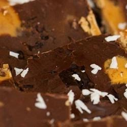
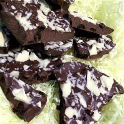
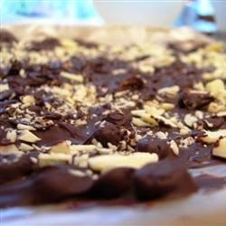
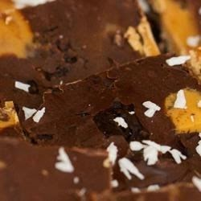
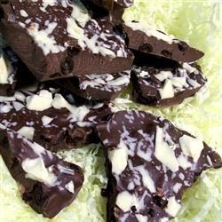
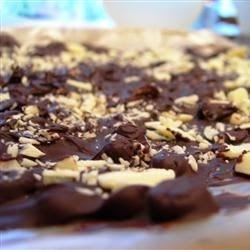

Espresso Bark
 


Recipe by Anna Cole
"A simple chocolate candy recipe, great for giving at Christmas!"



Recipe by Anna Cole
"A simple chocolate candy recipe, great for giving at Christmas!"
Ingredients
- 2 cups semisweet chocolate chips
- 1 teaspoon margarine
- 3/4 cup whole coffee beans
- 1/4 cup chopped white chocolate
Directions
Prep: 10 minutes
Cook: 5 minutes
Ready In: 25 minutes
- Cover a cookie sheet with waxed paper.
- Combine the chocolate chips and margarine in a microwave-safe bowl.
Heat in the microwave at 30 second intervals, stirring between each, until melted and smooth.
Mix in the coffee beans until evenly distributed.
- Pour the chocolate out onto the waxed paper and spread into an even layer.
Sprinkle the pieces of white chocolate evenly over the top and press in lightly to make sure they stick.
Place in the freezer until set, about 5 minutes.
Break into pieces and store in an airtight container.